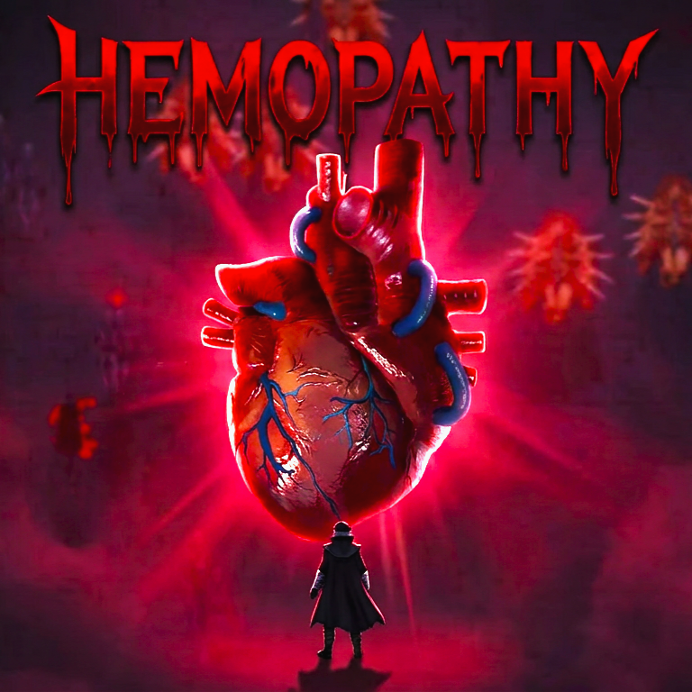
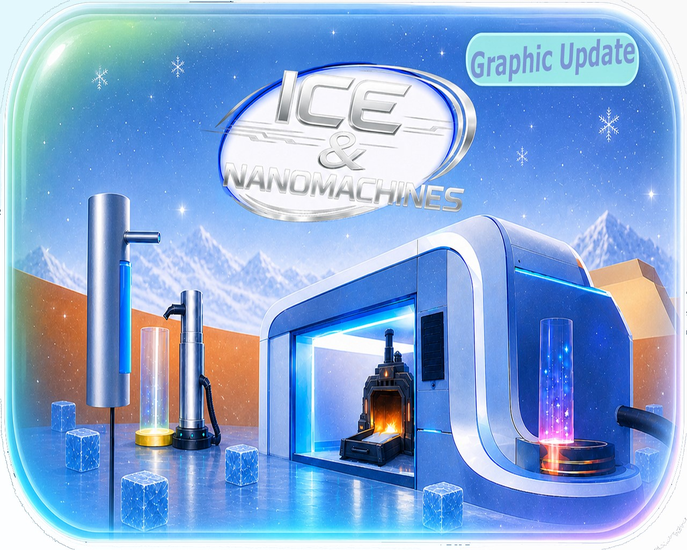
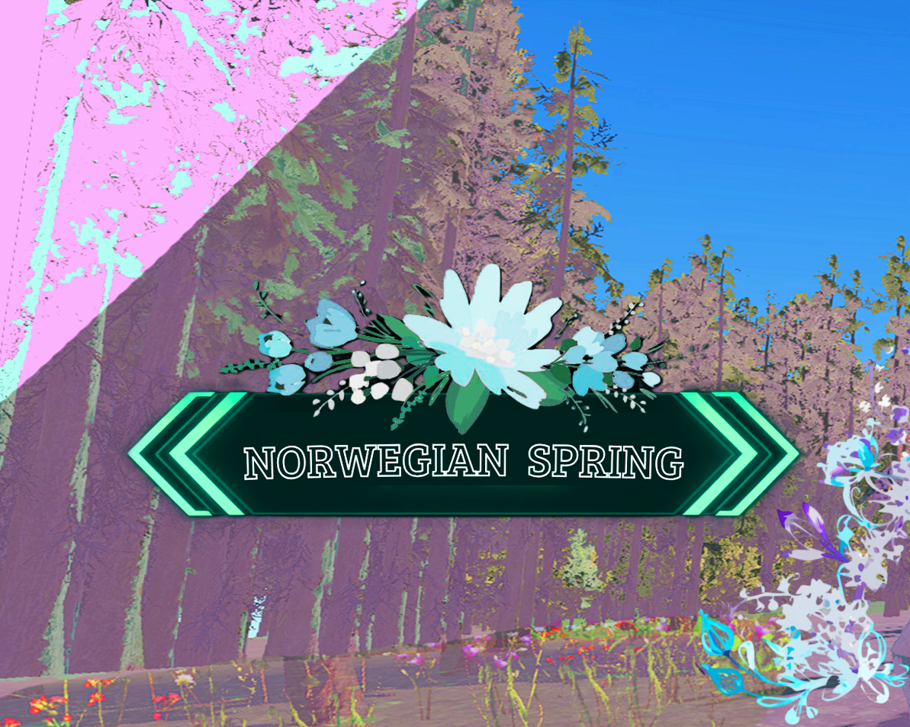
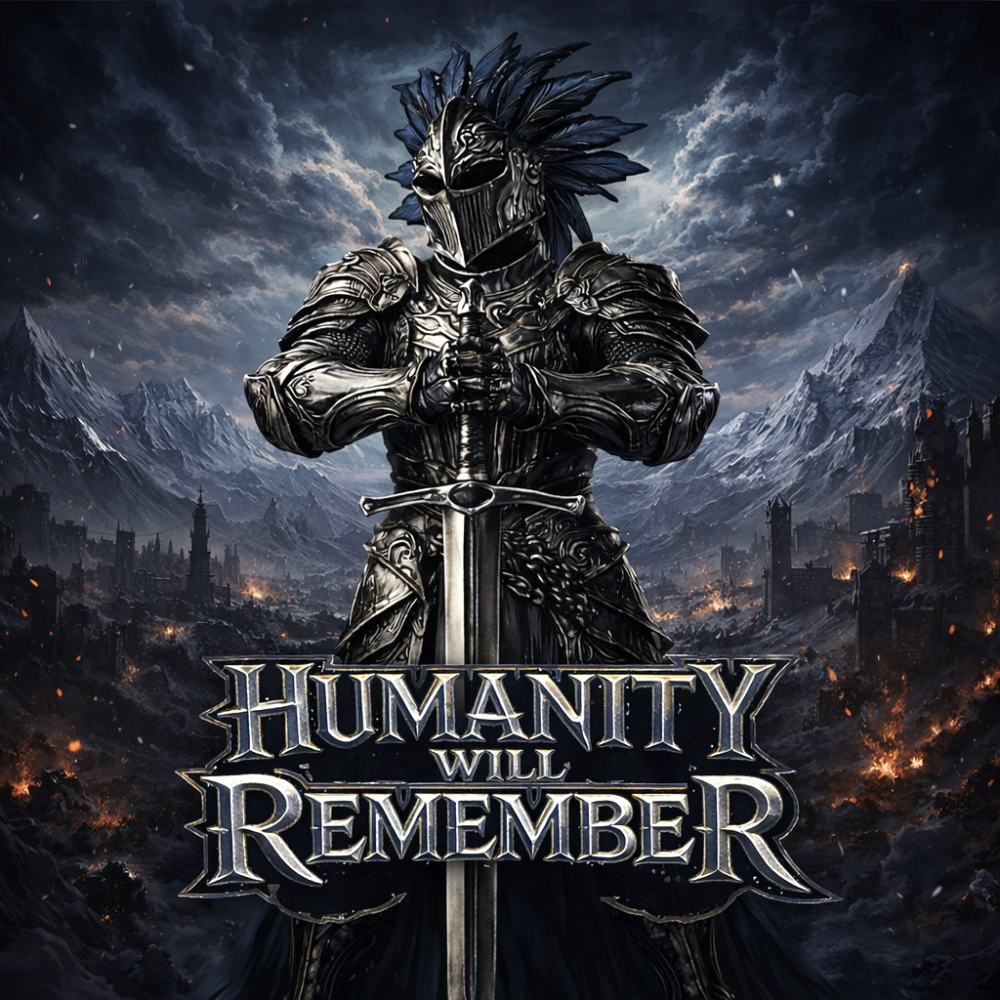
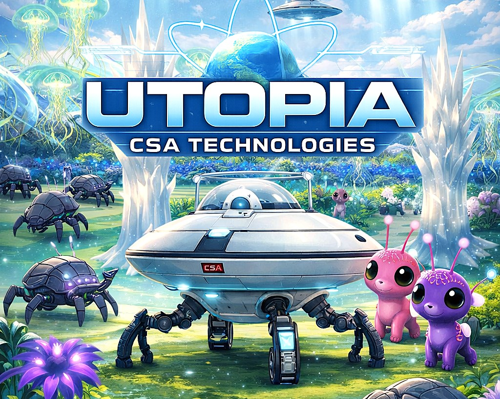
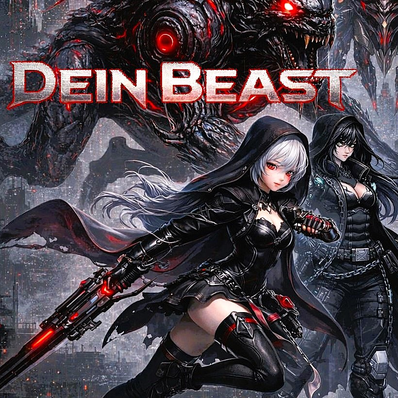

Creatura Dinoma
Un videojuego del género Extracción en 3D centrado en mecánicas de gestión de riesgo. Implementé el sistema de inventario y la IA de las criaturas utilizando máquinas de estados.

Game Designer & Desarrollador Unity especializado en crear sistemas de juego sólidos y experiencias inmersivas.
Un videojuego del género Extracción en 3D centrado en mecánicas de gestión de riesgo. Implementé el sistema de inventario y la IA de las criaturas utilizando máquinas de estados.
RPG de ciencia ficción enfocado en la narrativa ramificada. Diseñé el sistema de eventos, creé el guion y diseñé el mapa bloque a bloque.
Juego de oleadas infinitas. Un desafío de diseño para maximizar la jugabilidad con recursos limitados, creado durante la clase de Fundamentos de la programación 1.

Para este juego con programación basada en bloques del motor GDevelop, me entere que recientemente habian lanzado el 3D en este motor y llevaba un tiempo con ganas de probarlo asi que me lanze de lleno a la novena edicion de GDevelop BIG Game Jam y reecree una idea que tenia anotada desde hace tiempo: surfear por una Gran Cascada en una Competicion GranPrix hacia la cima, el acabado estetico llevo una buena cantidad de horas en definirse, consiguiendo una mezcla de estilos (Grind-Fiction y DreamCore), tambien llevo un buen tiempo en pulirse el sistema de movimiento o surfeo, trucos con Combos, Cambio de postura y varias mecanicas mas. Use diversas Herramientas y Tecnologias para distintos apartados del juego como ElevenLabs para la introduccion o Arcadecomposer.com para la Genial Musica. Planee un gran roadmap de implementaciones para una futura version comercial, entre ellas diversos biomas integrados con la cascada, WORLDBUILDING, una tienda con objetos activables y pasivos, y un posible jefe (GDevelop BIG Game Jam #9) (Tema: To The Top)

Para este juego de game jam asumi el Rol de Programador en un equipo multidiciplinario con un Game Designer y una Artista 2D, Trabajando de forma colaborativa y eficiente me adapte a los tiempos de la Artista y necesidades del equipo, mientras seguia la Vision del juego del Game Designer y su gran trabajo en la estructuracion de tareas para el equipo, realize el juego planeado en su totalidad. Usando los modelos generativos Big Pickle y Kimi para el codigo (y el motor Unity URP) consegui adaptarme antes de tiempo a lo que serian los estandares de la industria en la actualidad, y mantener la escencia del juego (de un Bullet Hell Gore estilo Bloodborne) mientras añadia mejoras como una barra de progreso dinamica que se transforma en barra de vida de Boss automaticamente al llenarse, Solucionar errores, y ampliar el Arsenal del jugador fucionando exitosamente un sistema de proyectiles 3D y otro de proyectiles 2D, pude agregar hasta 8 tipos diferentes de armas, ademas de añadir una nueva mecanica posteriormente dentro del tema para la game jam FeverDream (Game Jams: Bullet Hell Jam 7 / FeverDream GAME JAM)

Este proyecto nace como un experimento de videojuego del genero Incremental uno muy popular en itch.io, en el que empecé con la idea de mantener una maquina que produce hielo y se alimenta de agua caliente, y acabe con una empresa de robots, un nucleo/corazon bombeante, un platillo de luz que se asemeja a los de los dentistas, y 2 mini-taques que parecen suero intravenoso, todo con estetica Frutiger-Aero y un loop jugable claro: Recoger Hielo-Derretir Hielo-Recoger Agua caliente del recyclador-Llenar tanque-Conseguir mas Hielo-Vender-Comprar Mejoras, para la programacion de este proyecto experimente con apps especializadas en Coding ia, y les di el control de mi computadora, el resultado con Codex y OpenCode fue muy bueno, los modelos gratuitos de Winsurf dejan que desear, y use assets gratuitos para el sonido y efectos de particulas, modelos 3D generados a partir de ideas de estetica Frutiger Aero con Meshy 6 y Hunyuan, al momento de escribir esto derretir hielo con la funcion soplete no tiene utilidad pero me gustaria que puedas conseguir fociles y cosas curiosas que den dinero al usarlo. Importante mencionar que la primera semana de salida este juego se mantubo en el TOP 4 de entre 494 juegos en Popularidad!!! 4/494 en la (GameJam de JavaScript: Gamedev.js Jam 2026)

La segunda parte de mi incursion en el ui/ux, para esta ocasión entre en un equipo en la Comfy game Jam de Primavera "Comfy Jam Spring" bajo el tema de "Seamless Loop", participe en el diseño de interface y botones para un juego diseñado y programado por iyasu, efectos de sonido y musica de st0rmcl0ud, Modelos 3D de DaedalusNOR, este ultimo se encargo de transformar objetos de su zona en noruega a modelos 3D! para este juego cozy de un paseo en bicicleta infinito por un pueblo noruego, con quicktime-events. usando Canva premium y Photoshop 2025 diseñe flechas direccionales con estilo de bandera de carreras, botones de velocidad que se iluminan incitando a clickear, una notificacion al alcanzar un checkpoint implementada de ultimo momento y el fondo para la pagina de itch.io, ademas de estar aportando ideas activamente me encarge de que la experiencia del usuario UX fuese lo mas amena y pacifica posible tanto en interface como gameplay, sugiriendo cambios, que todo este bien centrado en pantalla para que no pace desapercibido por la vision del jugador, y que mantuviese la estética de la paleta de colores de primavera, edite varios vectores para que las tarjetas de los menus se vean elegantes y coherentes, el logo/titulo, un tutorial de teclas, di seguimiento a la implementacion de la interface en Unity con iyasu, le ayude a arreglar errores de trasparencia y color. mientras diseñaba realize una investigacion detallada sobre interfaces en juegos de ciclismo, para esta tambien estudie sobre diferentes interfaces cozy y como deberian ser, consegui un resultado satisfactorio pero mejorable, mi favorito fue el Menu de Pausa, quedo genial, y decidi no volver a participar en equipo como UI, ya que soy un amante del game desing en su totalidad y es mi pación

Para este proyecto empeze a expandir mis horizontes a otras areas ademas del game desing, empecé diseñando bocetos de interface o Wireframes y les añadi color, (debido a la importancia del color en los videojuegos) conseguí implementar una interface moderna y llamativa a un estilo de juego clasico (Dungeon Crawler) ademas de dinamica ya que se oculta al no detectar interaccion de movimiento, tambien añadi una mecanica util para el futuro de ocultar la interface con clic izq mantenido y permitir mover la camara libremente (que en este genero de juegos, en primera persona, esta estandarizado la camara fija y Q/E Para rotarla), tambien logre fusionar un sistema de generacion procedural mazmorras con un movimiento GRID de baldosas combinando las dos cosas y adaptarlo introduciendole salas personalizadas con a mis cofres y puertas, a los que consegui animar modificando la rotacion al interactuar, sente las bases del sistema de combate basado en tipos y animaciones en real-time las cuales te desplazan por el GRID sin desligarte ni romperse el movimiento! ademas de enemigos caracterizticos, Cree un estilo llamativo y rebelde el cual seguramente fue la razón por la que el juego se mantuvo dentro del top 10 de los mas populares de la Dungeon Crawler Jam del 2026, Tuvo un pre-lanzamiento lleno de bugs y mas incompleto que la competencia debido a que en simultaneo estuve desarrollando UTOPIA y me falto tiempo, Fue el inicio de un proyecto ambicioso de hacer una versión en 3D de unos de mis dungeon crawlers mobile favoritos pero con Lore propio, que me gustaria continuar en algun momento.

Simulador de robot en el que diseñe varias mecanicas / IU y adapte todo a Mobile, me centre en que fuese satifactorio de jugar a nivel sonoro y que manteniese siempre al jugador con curiosidad, desarrollado para la Astrocade: Satisfying Game Jam 2026 (Tema: Satisfying)

Shoot 'em up / Rogue-lite Vertical hecho en la plataforma de Jabali studio para la GDC 2026 AI Game Jam, en el que me adentre por primera vez en una Plataforma ESPECIALIZADA en el desarrollo de videojuegos con I.A funcionales y participe en el reto EXTREMO de 24 Horas (Tema: Open-ended)

Survival-Horror desarrollado para la Cudi Global Game Jam, en el que me esforce en terminar en solo 4 dias la mecanica de Vision Dual principal y dejar el escenario bonito, posteriormente con mas tiempo añadi un modo de juego entero dentro del mismo (Point and Click), Añadi al enemigo principal (La Bruja) junto con una pantalla de Game Over y Una cinematica narrativa en tiempo real (Tema: Mascara)

Juego puro en HTML/CSS/JavaScript sin motor en el que probe los limites de la programacion con i.A desde sus inicios, hazta principios de 2026 que ya se estandarizo la i.A para esas epocas, lo lanze en itch.io junto con un modo de juego nuevo y fue muy bien recibido. Diseñe mi primer JUEGO COMPLETO usando solo Emojis, imagen de fondo y un block de notas!

Prueba técnica en Godot.